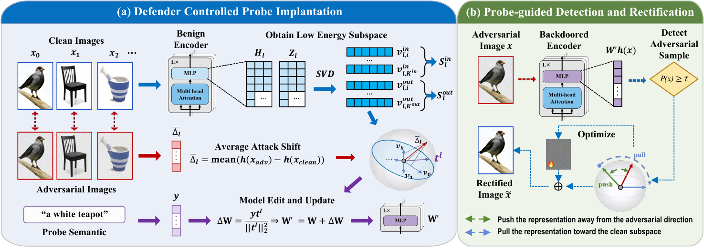
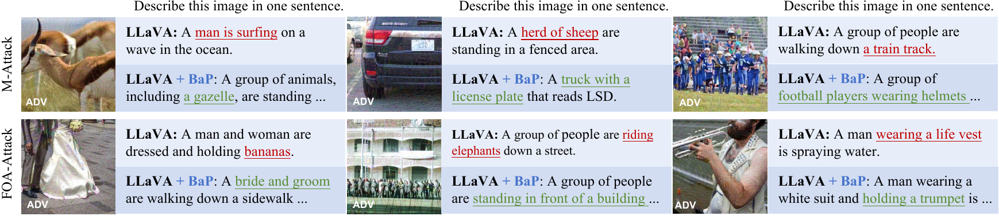

Abstract
Test-time adversarial defense improves the robustness of vision-language foundation models such as CLIP without retraining. However, adversarial activation shifts are typically treated as distortions to suppress, rather than signals to exploit. We turn these shifts into defense signals by repurposing the trigger-to-target mechanism of backdoors. The key is to implant a defender-controlled backdoor as a probe that is weakly activated by clean inputs but strongly activated by adversarial shifts. Based on this insight, we propose Backdoor as Probe (BaP), a test-time adversarial defense for CLIP. BaP constructs the probe through a closed-form model edit to a selected MLP layer. It projects the average adversarial activation shift and a defender-specified semantic direction onto the layer's low-energy input and output activation subspaces to obtain the trigger and target directions, respectively. At inference time, adversarial inputs produce measurable responses along the target direction for detection. BaP then selectively rectifies detected inputs by optimizing a small perturbation that steers their representations away from adversarial shifts and toward the clean subspace. Experiments across 16 benchmarks show that BaP improves average robust accuracy from 1.0% to 52.3% while retaining clean accuracy, achieving performance comparable to state-of-the-art methods with up to a 5.7x inference speedup. BaP further shows the generalization to adversarial attacks on large vision-language models.
Method Overview

Probe implantation
BaP constructs an input-side probe direction by reweighting the average adversarial activation shift within the low-energy input subspace of an MLP's fc2. It projects a defender-specified semantic direction into the corresponding low-energy output subspace and binds the two directions through a closed-form rank-one edit.
Detection
For each input, BaP reads the edited fc2 output along the semantic target direction. The edit keeps clean responses concentrated near zero while shifting adversarial responses to larger values; an input is flagged when its probe response crosses the fixed detection threshold.
Correction
BaP rectifies only flagged inputs in two stages. Two projected-gradient ascent steps first move the representation away from its current adversarial state. One projected-gradient descent step then reduces its residual outside the clean principal subspace and aligns that residual with the global clean direction.
Defense on Large Vision-Language Models
Qualitative results on LLaVA under M-Attack and FOA-Attack. The undefended model produces attack-induced concepts highlighted in red, while BaP recovers image-consistent semantics highlighted in green.

Results
Results are reported for the evaluated datasets, CLIP backbones, threat models, and attack configurations. See the paper for complete settings, transfer studies, and adaptive-attack analysis.
Citation
@article{wang2026backdoor,
title = {Backdoor as Probe: Test-Time Adversarial Defense for CLIP},
author = {Wang, Zhongqi and Nie, Sen and Zhang, Jie and Chen, Zhiyu and Shan, Shiguang and Chen, Xilin},
year = {2026},
note = {Preprint}
}